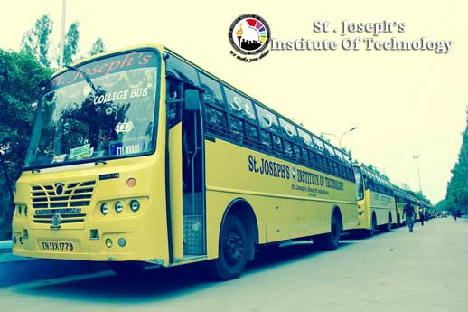

The college provides exceptional transport facility to the students and staff. Buses are available for all routes in the Chennai city and the suburbs. The buses are equipped with a speed governor and first aid facilities. To prevent accidents and late comers to the college, private vehicles and two wheelers are not permitted inside the college premises. All services and repairs of the buses are done in the workshop inside the campus, along with which, the body building facilities are also available. In addition to that, the diesel bunk inside the campus supplies diesel for all the buses.The Buses are well and properly maintained in a good condition and we provide buses to all the nook and corner of the city as well as out of the city.And there is a total of 19 buses in the college.